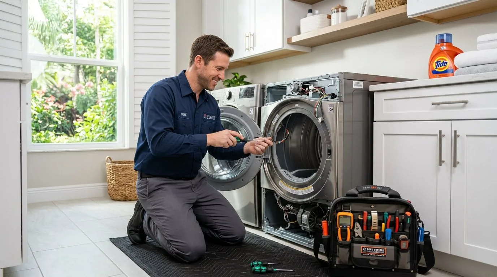
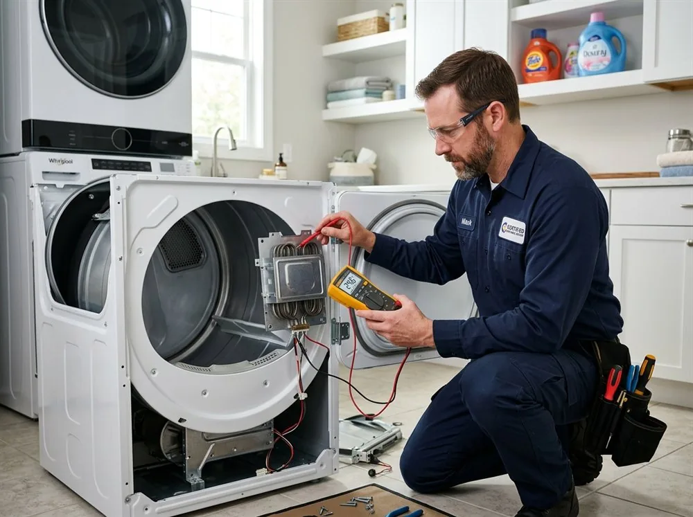
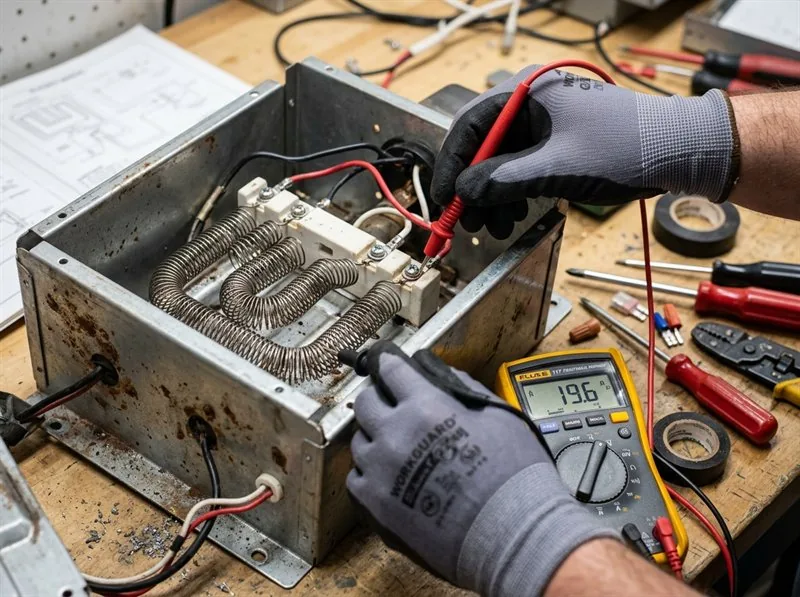

Live responsePrompt dispatcher during business hours

Bayfront Dryer Works
Sarasota, FL • Tap to Call 941 288 9768
Your local Sarasota team, ready to respond
Dryer Repair in Sarasota, FL
Dependable local dryer repair service for Sarasota, FL. Fast in-home diagnosis, upfront transparent estimates, and quality workmanship for electric and gas dryers across Sarasota County.
Select Your Dryer Issue for Immediate Details:
- Prompt Mon–Fri dispatch
- Residential & commercial
- Upfront quotes before work
✓
Service desk statusOpen Mon–Fri 8:00 AM – 4:00 PM
Intent-driven triage
What Dryer Problem Can We Solve Today?
Select your symptom below for diagnostic guidance, or call our local Sarasota dispatch desk directly during business hours.
Top Problem
Dryer Not Heating
Tumbles with cold air only. Burnt heating coil, blown thermal fuse, or cycling thermostat issue.
Inspect & Fix →
Mechanical
Drum Not Spinning
Motor hums but drum won't turn. Snapped drive belt, seized idler pulley, or worn drum rollers.
Inspect & Fix →
Noise Alert
Loud Squeaks & Thumping
High-pitch screeching or heavy rumbling. Failing rear bearing, blower wheel, or worn glides.
Inspect & Fix →
Power Issue
Won't Start / Dead
Dryer completely unresponsive or trips breaker. Door switch, push switch, or board failure.
Inspect & Fix →
Airflow
Taking Too Long to Dry
Takes 2-3 cycles to dry clothes. Restricted vent line, lint buildup, or moisture sensor fault.
Inspect & Fix →
Urgent Safety
Burning Odor / Overheating
Dryer cabinet feels scolding hot or smells of scorched lint. Disconnect power and request urgent safety inspection.
Safety Inspection →
Call Bayfront Dispatch: 941 288 9768
Direct Sarasota Dispatch • Mon–Fri 8:00 AM – 4:00 PM
Skilled teamDedicated dryer specialists
Clear optionsScope and price before work
Clean finishProtect, repair, test, tidy
Work backedThorough diagnostic standards
Brand Expertise
Major Dryer Brands We Service in Sarasota
Our mobile service technicians are equipped with proper diagnostic tools and quality replacement parts for major residential and commercial dryer brands in Sarasota County.
Whirlpool
Top Models
Whirlpool Dryer Repair
Prompt diagnostics for Cabrio, Duet, and traditional top-load models. Heating coils, drive belts, and control modules in mobile stock.
✓ Accurate Diagnostics
SAMSUNG
Smart Tech
Samsung Dryer Repair
Specialized error code troubleshooting (tE, dE, 4C), moisture sensor boards, and dual heating element assemblies replaced on-site.
✓ Sensor Dry Specialists
LG
OEM Parts
LG Smart Dryer Repair
Expert repairs for TrueSteam, Sensor Dry, and inverter motor units that stop tumbling, squeak, or fail to produce heat.
✓ Steam Dryer Diagnostics
GE Profile
Leading Brands
GE & GE Profile Repair
Comprehensive service for General Electric and GE Profile dryers, including start switches, thermostats, and motor pulleys.
✓ Electric & Gas Units
MAYTAG
Heavy Duty
Maytag Commercial Tech
Heavy-duty drum roller, drive belt, and blower wheel replacements for Maytag Bravos and commercial-grade units.
✓ Heavy Duty Tech
Speed Queen
Commercial Heavy
Speed Queen Repair
Industrial durability service for commercial and residential Speed Queen dryers, mechanical timers, and blower assemblies.
✓ Heavy Duty Specialists
Kenmore
All Series
Kenmore & Elite Series
Complete diagnostic support for Sears Kenmore 600, 700, and 800 Series, including thermal cutoffs and centrifugal start switches.
✓ Full Series Support
BOSCH
Condensing Tech
Bosch & Electrolux
Full repair support for Bosch 500/800 Series compact ventless condensing dryers, Frigidaire, Amana, and KitchenAid appliances.
✓ Ventless & Compact Units
Quality OEM-Compatible Replacement Parts
Transparent Diagnostic Testing & Quotes
Experienced Local Dryer Specialists


The local standard
Trusted Local Dryer Repair Specialists in Sarasota, FL
Dryer Repair Sarasota FL connects residents and property managers in Sarasota County with dedicated, experienced appliance repair technicians. We focus on accurate in-home diagnostics, honest advice, and dependable repairs.
Our technicians are experienced and dedicated to providing superior service. We offer prompt appointment scheduling during our working hours (Mon–Fri 8:00 AM – 4:00 PM) and serve neighborhoods like Palmer Ranch, Gulf Gate Estates, Bee Ridge, and the barrier keys.
Complete service support
Professional Dryer Repair Services We Provide
Our specialized dryer repair services in Sarasota cover both electric and gas models. Technicians arrive equipped for comprehensive diagnostics and dependable repairs.
01!Urgent response
Dryer Not Heating Repair
If your dryer is not heating, our team can quickly diagnose and fix the problem. This service is essential for efficient laundry days in Sarasota, ensuring your clothes dry properly.
Explore Dryer Not Heating Repair
02↯Restore flow
Electric Dryer Repair
Our electric dryer repair service addresses common issues like malfunctioning thermostats, switches, and broken heating elements throughout Sarasota.
Explore Electric Dryer Repair
03♨Reliable service
Dryer Belt Replacement
A worn or snapped dryer belt prevents the drum from spinning. We provide belt and idler pulley replacements to get your laundry appliance running smoothly.
Explore Dryer Belt Replacement
04⚑Trusted repairs
Dryer Not Starting Repair
If your dryer won't turn on or trips the circuit breaker, our technicians test fuses, switches, and relays to restore operation safely.
Explore Dryer Not Starting Repair
05!Urgent response
Gas Dryer Repair
Our gas dryer repair services cover ignition systems, safety solenoid coils, and flame sensors to ensure safe and efficient burner operation.
Explore Gas Dryer Repair
Not sure which category fits? Tell us what you see, hear, or smell and we'll route the right technician.
Describe the problemWhy homeowners choose us
Why Sarasota Homeowners Choose Our Dryer Specialists
We stand out for our commitment to quality, clear communication, and customer satisfaction across Sarasota County.

100%Dedicated local service & upfront transparent pricing
From call to all clear
Our 4-Step Professional Dryer Repair Process
You always know what happens next, what needs your approval, and how we confirm the repair worked.
Step 1: Rapid Scheduling & Dispatch
We begin with a quick phone assessment to understand your dryer symptoms and schedule a local Sarasota technician.
Step 2: Diagnostic Assessment & Testing
Our technician arrives with precision diagnostic tools to pinpoint the exact failure cause inside the machine.
Step 3: Precision Repair with Quality Parts
With your approval, we replace worn components using quality OEM-compatible replacement parts.
Step 4: Safety Check, Heat Test & Cleanup
After repairs, we run complete heat and airflow cycle tests to ensure optimal performance and leave your laundry room spotless.
Built around the property
Residential Care & Commercial Dryer Coordination
The principles stay the same, but access, scheduling, documentation, and load change with the property.
Residential service
Practical repairs for occupied homes, rentals, condos, and HOA-managed properties.
- Convenient arrival windows during working hours
- Floor and work-area protection
- Repair versus replacement guidance
- Documentation for owners and property managers
Commercial service
Response plans for laundromats, vacation rentals, multi-family buildings, and salons.
- Priority business-hours dispatch coordination
- Phased work to limit laundry interruption
- Site contacts, access notes, and clear repair logs
- Preventative lint & airflow assessments
Expert Buying vs Repair Guidance
Repair or Replace? How to Decide for Your Sarasota Home
A clothes dryer is one of the most mechanically straightforward appliances in your home. Here is our honest rule of thumb to help you make the most cost-effective decision.
✓
When Repairing Your Dryer Is the Smarter Investment
If your dryer is under 10 years old and the drum and cabinet are structurally sound, replacing an electric heating coil, drive belt, thermal cutoff, or door latch costs a fraction of buying a brand-new replacement dryer.
%
The 50% Rule: Repair Cost vs New Dryer Replacement
As a general rule, if a repair quote exceeds 50% of the replacement price of an older machine (12+ years old) that has multiple failing components, replacement may make more sense. Our technicians always provide upfront estimates first.
★
Average Dryer Lifespan in Florida's Climate
In Florida's humid climate, dryers typically last 10 to 14 years when exhaust ducts are kept clear. Regular lint removal prevents airflow restriction, reduces motor strain, and prevents premature thermal fuse failure.
Start with what you notice
Common Dryer Problems We Diagnose & Repair in Sarasota
We effectively address the full range of dryer malfunctions to restore quiet, dependable drying performance.
Dryer Not Heating or Blowing Cold Air
Our team quickly diagnoses burnt heating elements, blown thermal fuses, and faulty cycling thermostats to restore full heat.
Dryer Drum Not Spinning, Turning, or Tumbling
We replace snapped drive belts, seized idler pulleys, and worn drum rollers to restore smooth, quiet tumbling.
Dryer Making Squeaking, Grinding, or Thumping Noises
We inspect worn rear drum bearings, damaged blower wheels, and glide strips to eliminate squeaks before motor damage occurs.
Dryer Not Starting or Tripping Breakers
We troubleshoot door latch switches, push-to-start switches, thermal cutoffs, and digital control boards to restore power.
Local Service Coverage
Dryer Repair Service Areas Across Sarasota County
Mobile appliance technicians provide in-home service across mainland Sarasota, master-planned communities, and coastal barrier islands. Select your area below for local scheduling:
Downtown Sarasota →
Bayfront high-rises, urban condos & compact ventless units.
ZIP 34236 Siesta Key →Barrier island estates, vacation rentals & coastal salt-air care.
ZIP 34242 Longboat Key →Luxury beachfront villas, Miele/Bosch dryers & condo HOA care.
ZIP 34228 Palmer Ranch →Prestancia, Silver Oak, VillageWalk & family home laundry suites.
ZIP 34238 Gulf Gate Estates →South Sarasota residential homes, Clark Rd corridor & older models.
ZIP 34231 Bee Ridge →Central Sarasota subdivisions along Proctor Rd, Bee Ridge & McIntosh.
ZIP 34233 Lakewood Ranch →East County master-planned villages, smart dryers & steam units.
ZIP 34202, 34211 Venice, FL →Island of Venice, South Venice, Wellen Park & coastal single-family homes.
ZIP 34285, 34293 Osprey, FL →Little Sarasota Bay communities, Historic Spanish Point & The Oaks.
ZIP 34229How every visit runs
Prepared for the Repair Behind the Repair
One standard, whatever the job turns out to be — from the first call to the final test.
Prepared arrival
The right equipment is on the truck before we reach your door — matched to the symptom you reported.
Diagnosis first
We confirm the real cause before any tool goes in — so you fix the problem, not the symptom.
Contained work
Floor protection, a tidy work area, and a careful cleanup on every visit.
Tested & documented
The result is re-tested and reviewed with you, with clear notes on what comes next.
Maintenance & Troubleshooting
Helpful Dryer Care Guides for Sarasota Homeowners
Practical diagnostic advice and safety tips for local appliance maintenance.
GUIDE
Read full guide →
7 Signs Your Dryer Needs Repair in Sarasota
From burning smells and strange thumping to extended cycle times, learn when to service your appliance before minor wear becomes an expensive breakdown.
GUIDE
Read full guide →
Dryer Vent Cleaning: A Sarasota Safety Guide
Why humid coastal air clogs vents faster, the warning signs, and what professional vent cleaning includes.
GUIDE
Read full guide →
Why Your Dryer Takes Two Cycles to Dry
Check airflow, load size, heat, and sensors in order before assuming your dryer is failing.
SAFETY
Safety guidance →
Dryer Burning Smell & Overheating Diagnostics
What to do immediately when you notice burning lint or scorched wire odors inside your laundry cabinet. Prevention steps for residential fire safety.
COMMERCIAL
Explore commercial →
Commercial & Multi-Family Laundry Maintenance
Keep coin-op, laundromat, and condo association dryers spinning reliably under heavy daily loads with proactive preventative service.
ARCHIVE
Visit blog library →
View All Repair Articles & Advice
Explore our library of appliance maintenance checklists, energy-saving tips, and seasonal humidity prevention articles.
Questions before we arrive
Frequently Asked Questions About Dryer Repair in Sarasota, FL

Still unsure? Our dispatch desk can help identify the safest immediate step and answer scheduling questions.
Call dispatch nowHow much does dryer repair cost in Sarasota, FL?
Dryer repair costs depend on the required diagnosis, dryer model, and parts needed (such as thermal fuses, belts, or heating elements). We provide upfront, transparent estimates before any repair work begins, with no hidden fees.
How does appointment scheduling work in Sarasota?
We provide prompt appointment scheduling throughout our operating hours (Monday–Friday, 8:00 AM – 4:00 PM). Urgent calls are prioritized based on technician availability across Sarasota neighborhoods.
Why is my dryer running but producing no heat at all?
A dryer that tumbles without heat is usually caused by a burnt heating element, a blown thermal cutoff fuse, a cycling thermostat malfunction, or (on gas units) a failed igniter or gas solenoid valve.
Is it worth repairing an older dryer or replacing it?
If the drum and cabinet are in good condition and the repair estimate is under 50% of the replacement price, repairing is far more economical and extends the dryer's life by several years.
Do you repair both gas and electric dryers?
Yes, experienced technicians service both electric dryers (240V) and natural gas/propane dryers, including gas safety inspections.
What dryer brands do you service?
We service all major brands including Whirlpool, Samsung, LG, GE, Maytag, Kenmore, Bosch, Electrolux, Speed Queen, Frigidaire, KitchenAid, and Amana using genuine quality replacement parts.
A problem does not improve with waiting
Need Fast Dryer Repair in Sarasota? Request Service Availability
Contact us for prompt and dependable dryer repair services. Our team is ready to assist you during business hours (Mon–Fri 8AM–4PM).

Talk with the local team
Schedule Your Sarasota Dryer Repair Appointment
We're here to help! Reach out to our dispatch desk for dryer diagnostics, estimates, or scheduling. Open Monday through Friday, 8:00 AM to 4:00 PM.
Direct Phone Dispatch
Call Directly for Prompt Scheduling
Speak directly with our local Sarasota dispatch team during business hours to confirm technician availability and schedule your service visit.
- Equipped Service Vans: Stocked with common replacement parts
- Upfront Quotes: Clear diagnostic estimates before work
- All Brands Serviced: Electric & gas dryer specialists
- Local Coverage: Serving all Sarasota County communities